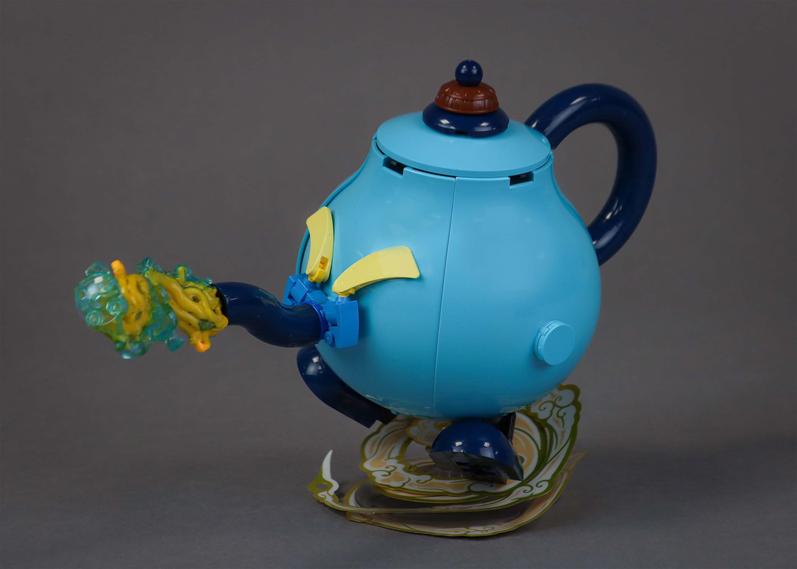
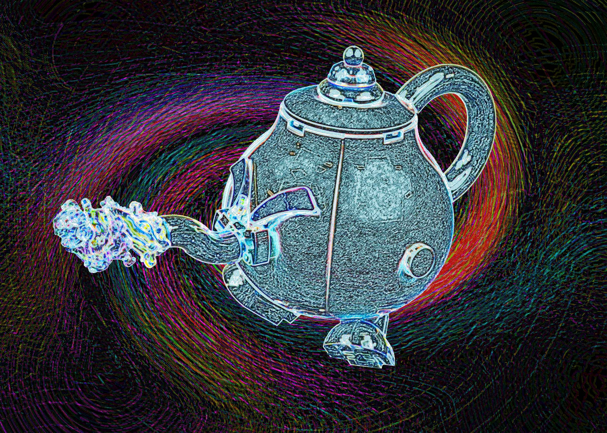
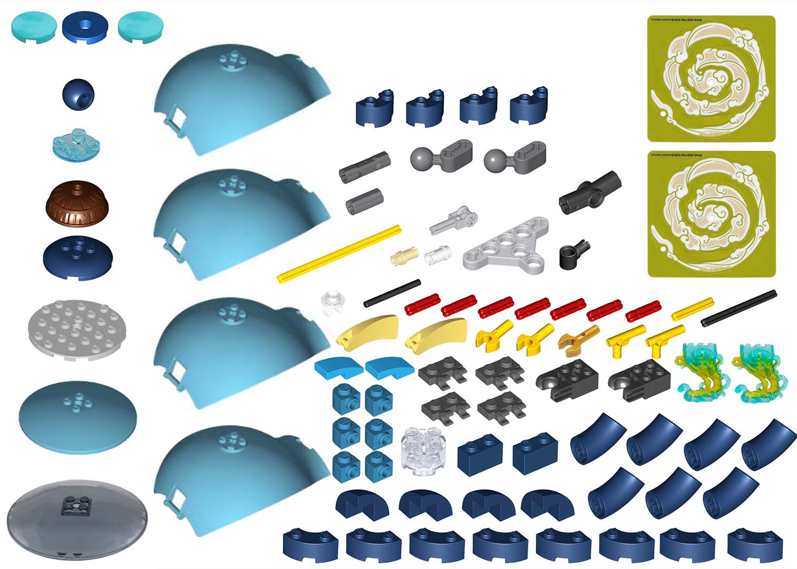

blue anteaque

For round 2 of Rogue Olympics, the theme was "blue". Honestly, I couldn't really think of anything clever this week, so I decided to take the theme at face value and literally make something colored blue.
The idea of a teapot came from messing around with the blue panel pieces. As with all Rogue Olympics rounds, the 101 part limitation is always on my mind, so being able to achieve a shape in only four pieces was huge. I then used some big macs to shape the spout and handle, and initially, I wanted the spout to be higher. However, the panel's 2x2 connection point was too low. I decided to shift gears and make the model into a character, which would forgive some of the inaccuracies in the model compared to a real teapot.
I spent a bit of time trying to figure out what effect to have shooting out of the spout, and I settled on using some ghost pedestals from the dreamzzz sandman. They give off a somewhat mystical effect, which I think fits the silliness of this character.
Sorry there isn't as much of a deep dive for this model; I built it pretty quickly and didn't have any wip shots :( Hopefully the funny edit makes up for that.

